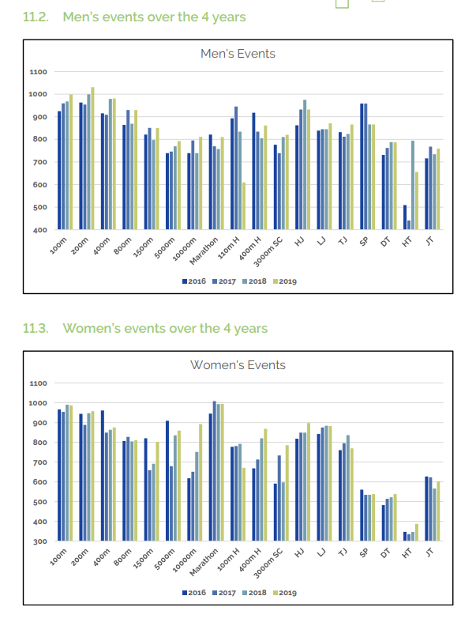

Possible Solutions
Solutions proposed by the athletes who participated in the survey:
- Proposal of Dedicated Budgets: Advocate for the allocation of dedicated budgets specifically for women's sports programs within AUB and work towards securing increased financial support for female athletes.
- Promote Inclusive Events: Work with AUB's sports department to actively promote and organize inclusive sports events that encourage greater participation among women.
- Enhance Social Media Presence: Develop and implement a comprehensive social media strategy to showcase the achievements, stories, and events of women in Track & Field at AUB. This can help increase visibility locally and internationally.
- Incorporate Education Programs: Integrate educational programs within the sports curriculum at AUB, focusing on women's health, including topics such as menstrual cycles and overall well-being.
- Workshops and Seminars: Organize workshops and seminars in collaboration with health professionals to raise awareness about the unique needs of female athletes.
Another possible solutions:
- Seek External Sponsorships: Explore partnerships with external sponsors or organizations interested in supporting women in sports to supplement internal funding.
- Implement Outreach Programs: Develop outreach programs targeting young girls and women to foster interest and participation in Track & Field from an early age.
- Collaborate with Media Outlets: Establish partnerships with local and national media outlets to ensure regular coverage of women's sports, including Track & Field.
- Campaigns for Gender Equality: Launch awareness campaigns within AUB and collaborate with external organizations to challenge and change societal norms and stereotypes surrounding women in sports.
- Foster a Supportive Culture: Encourage open discussions and create a supportive culture within AUB that challenges gender stereotypes, promoting an environment where female athletes are celebrated for their achievements.
A solution based on statistics:

The above charts are a screenshot from the book TOKYO 2020NE LEBANESE ATHLETICS' EVOLUTION 2016-2019, Gaby Issa-El-Khoury, Ph.D., OLY(page 103).
Based on the charts, one can see that women are better than men in the Marathon event(higher points). However, for the other events that remain, men are better or as good as women.
It is importnant to note that these points can be used to compare men to women in respective events or even across different events. The points are based on mathematical and statistiscal calculations which are an international standard to make these comparisons even though there exist biological differences that put men in an advantage, and even though the nature of the events are very different.
So, a natural solution would be to support the women in the events that men dominate by a huge difference in levels. The same applies for the events in which woman score relatively low points(compared to other events).